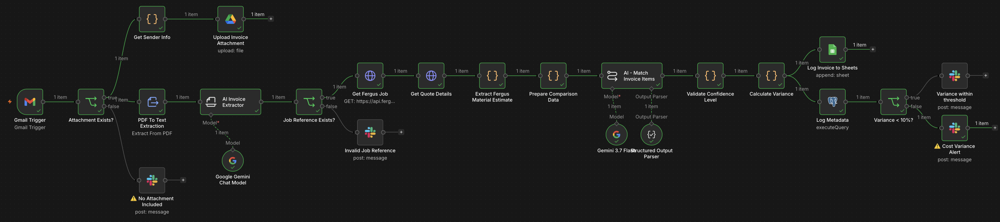

← home
Supplier Invoice Reconciliation
n8n · AI/LLM (Gemini) · Gmail · Fergus · Google Drive · Sheets · Slack · Postgres
Automated invoice-to-quote matching with variance alerts.
Every incoming supplier invoice is automatically read, compared against the original job quote in Fergus,
line items are intelligently matched, and any cost differences are flagged to the team via Slack.
A complete audit trail is stored in Google Sheets and Postgres for full visibility.
How it works — in plain English
The system watches a dedicated Gmail inbox for supplier invoices. As soon as a new email with a PDF arrives,
it goes through a fully automated verification and reconciliation process. It extracts key information,
finds the matching job, compares every line item to the original quote, and notifies the team only when something needs attention.

Step-by-step workflow
1. Attachment check
Checks whether the incoming email actually contains a PDF invoice.
If not, the team gets a Slack alert: "No Attachment Included" and the process stops —
someone needs to follow up manually. If the PDF is present, the flow continues.
2 & 3. In parallel: sender info & file processing
While the PDF is being converted into readable text, the system also extracts sender details,
cleans the supplier name, and uploads the original PDF to Google Drive for permanent storage.
4. AI invoice extraction
Using AI (Gemini via LangChain), the system reads the invoice text and pulls out all important fields:
invoice number, date, supplier name, ABN, job reference, totals, and a detailed list of materials or line items.
It extracts exactly what is written — no guessing or corrections.
5. Job reference check
If no job reference is found in the invoice, the team is alerted via Slack
("Job Reference Not Found") and the process halts for manual review.
If a reference exists, the system moves on to fetch the original quote.
6–8. Fetch original quote & estimate
The system connects to Fergus (the job management platform) to retrieve the job details and the active quote.
It then extracts the "Materials" section — every estimated line item with quantity, unit, unit cost, and total cost.
9–10. AI line-item matching
Both lists — the invoice items and the original estimate — are sent to the AI.
Instead of matching by exact text, the AI uses context to pair items that mean the same thing, even if abbreviations,
brand names, or unit descriptions differ. Each match is assigned a confidence score, and any unmatched items are flagged separately.
11–12. Confidence check & variance calculation
Matches with low confidence (below 0.75) are marked for review. Then, for every matched line item,
the system calculates the variance in quantity, unit price, and total cost — both in absolute terms and as a percentage.
It also rolls up the total estimated cost vs. total actual (invoiced) cost.
13. Logging (automatic)
Every processed invoice is logged in two places: a Google Sheet (for a quick, human-readable running list)
and a Postgres database table (for structured, queryable records). The log includes job reference, supplier,
invoice number, estimated/actual totals, and the variance summary.
14. Final decision – within budget?
The system checks the total cost variance percentage against a preset threshold. If the variance is within acceptable limits,
the team gets a green Slack notification: "Invoice Variance Within Threshold". If it exceeds the threshold,
a "Cost Variance Alert" is sent, requesting manual review before payment.
Slack alerts at a glance
❌ No Attachment Included — Invoice PDF is missing. Human follow-up required.
❌ Job Reference Not Found — Cannot identify the relevant Fergus job. Manual lookup needed.
✅ Invoice Variance Within Threshold — Everything checks out. No action needed.
⚠️ Cost Variance Alert — Invoiced cost differs significantly from the estimate. Review required.
Where does the data go?
- Google Drive — Stores a copy of every processed invoice PDF for easy retrieval.
- Google Sheets — Running log with job reference, supplier, invoice number, estimated vs. actual costs, and variance summary.
- Postgres — Structured storage of the same summary data in a `supplier_invoices` table for future analysis or integrations.
What this demonstrates
- Automated AI document parsing and data extraction
- Semantic matching of invoice lines to quote items (not just text matching)
- Integration with external systems: Gmail, Google Drive, Slack, Fergus, Google Sheets, Postgres
- Parallel processing and conditional logic for robust error handling
- Comprehensive logging and audit trail creation
- Clear, human-friendly notifications for operational teams
← back to home